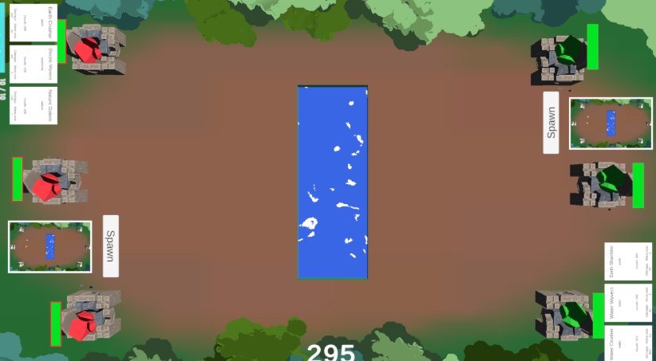
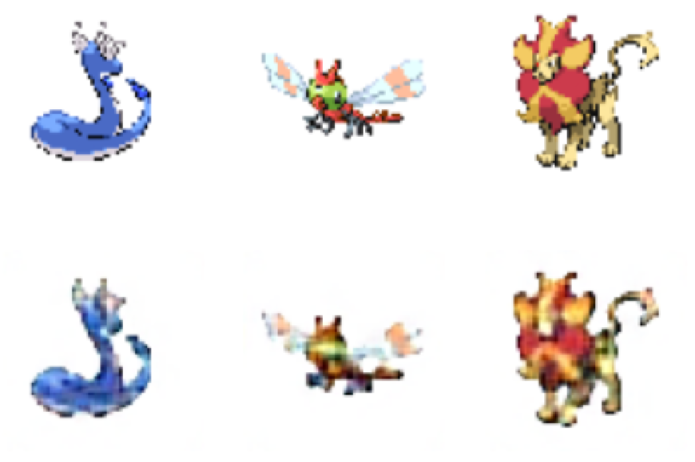
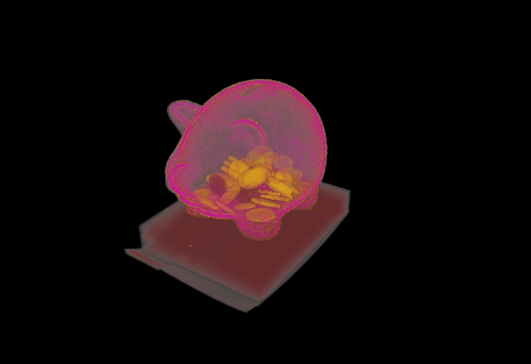
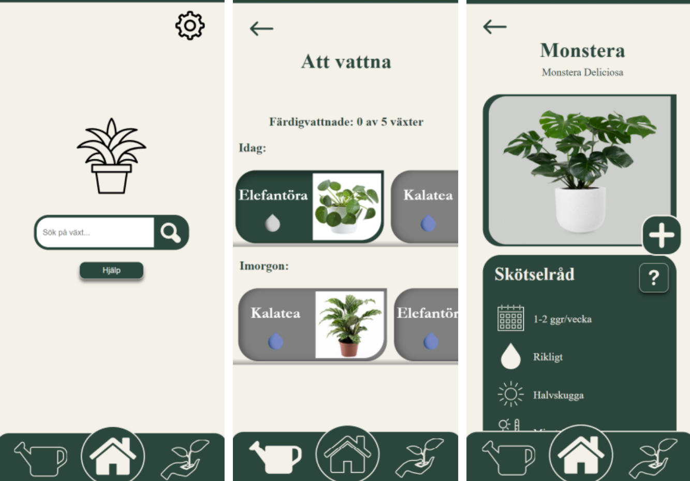
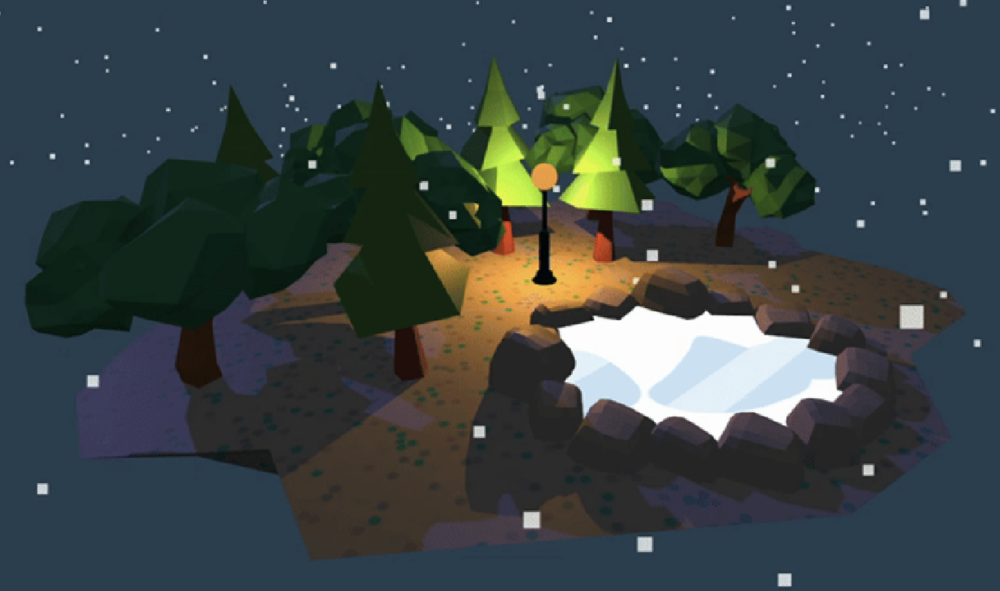

Gayathri
Naranath
(Almost) newly graduated engineer looking to put five years of curiosity and skills to work!

(Almost) newly graduated engineer looking to put five years of curiosity and skills to work!
I'm a final year Media Technology student at Linköping University, currently wrapping up my degree with a thesis on real-time translation using AI. My education focuses on the techniques behind modern digital media, such as 3D graphics and interactive web technologies, as well as traditional engineering.
I spent part of my studies on exchange at Waseda University in Tokyo, where I focused on 3D computer graphics and general data technology. I'm described by my peers as curious, inventive, and someone who gravitates toward unconventional solutions.
I learn fast, I enjoy learning, and I am certain that's my strongest skill; I can pick up any new framework, tool, or domain and get productive quickly. I'm looking for opportunities to apply my skills in a creative and impactful way.

A card game developed for my bachelor thesis which uses physical cards with ArUco markers placed on a digital screen to interact with the game. We implemented a card recognition system using OpenCV to track the cards in real-time and trigger character spawns and other actions in Unity, resulting in a very engaging and unique gameplay! Click here! for a trailer showcasing the project.

A convolutional autoencoder in Tensorflow using Keras trained to reconstruct images of Pokémon sprites. I experimented with various architectures, hyperparameters, and data augmentation techniques. The project involved image preprocessing, model training, and evaluation, a comprehensive exercise in deep learning and computer vision techniques.
View on GitHub →
Developed interactive transfer functions to visualize the interior of a piggy bank using volumetric rendering techniques. Built custom controls for opacity, colour mapping, and compositing methods (front-to-back, first hit-point, MIP) to reveal hidden 3D structures.
View on GitHub →
An app that helps its users take care of their plants with watering reminders and care instructions. Built with React for the frontend and a Node.js backend, this course project is focused on learning about UX/UI.

An interactive 3D island scene in the browser using Three.js. Uses real-time 3D rendering with interactive camera controls and a custom Phong shader.
View on GitHub →